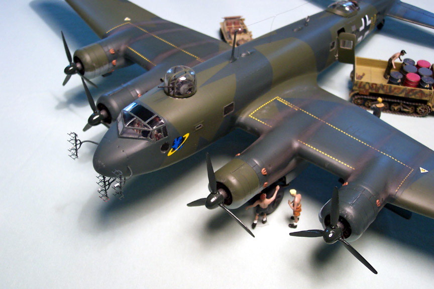
Images, text and model Copyright © 2003 by Matt Swan
First, a little history:
The FW-200 was a low-wing, four-engine monoplane with fully retractable undercarriage originally designed as a passenger aircraft with seating accommodations for twenty-six passengers. It was an all-metal aircraft except for fabric-covered control surfaces. During World War Two the German need for a long-range maritime reconnaissance/strike craft modified it’s role. The FW-200 carried bombs under the wings, had a lengthened ventral gondola providing for gun positions, with a machine gun firing forward and a machine gun firing aft; there were also two dorsal machine gun positions. The C-8 version, which carried the Henschel guided missiles, had replaced both the dorsal and ventral forward machine guns with 20mm cannons.
In 1943-1944 several Condors were modified to carry two Hs-293 guided missiles for attacking shipping. No successes were recorded for Condors using this weapon. These aircraft had strengthened fuselages and were fitted with FuG 200 surface search radar. Even with the strengthened fuselage they were prone to breaking their backs on hard landings or simply coming apart in the air. Significant modifications were made to the design during the limited production run, primarily with updated engines. By mid-1944 the Condors were withdrawn from maritime services because the Allies overran their bases in France and because of fuel shortages. The surviving FW-200s were then employed as transports.
I have never attempted a complete vacuform project before so this is just a little intimidating. I started by using a Sharpie permanent marker to outline the main pieces and then scored them with a fresh #11 Xacto blade. Amazingly enough the parts just popped right out of the sheet with no problems. The kit consists of several sheets of vacuform pieces, three different bags full of resin pieces and a bag full of white metal pieces.
For a complete review of the kit in the box go here...Box Review
This is the main dashboard after completion.
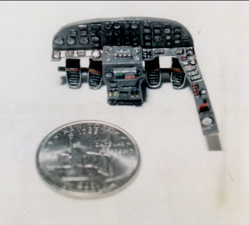
The rudder pedals were cast into the dash as a single piece. I wasn't happy with their positioning so I cut them off and moved them about 2mm deeper into the structure. I attached a short piece of styrene rod behind the lower instrument console and used gap-filling superglue to reattach the rudder pedals in the new location.
The side console has been attached. I painted the main dash RLM66 then did the instrument areas in flat black then placed a drop of flat white into each instrument position. I cut out Reheat instrument faces and placed one into each position with a drop of Micro-sol setting solution. After everything had ample opportunity to dry I applied a small drop of Testors Clear Parts Cement to each instrument face. Controls were picked out with Testors black, red, yellow and green enamels. The entire assembly was washed with a sludge wash and set aside.
Each individual bulkhead and floor panel was removed from the main sheet and sanded to the line. For those of you that don't understand that it refers to the line that was marked off by the Sharpie marker after the piece is removed from the main sheet of plastic. For additional information about the basics of working with vacuform kits, Brett Green did a great article that you can check out
here....Vacuform Basics
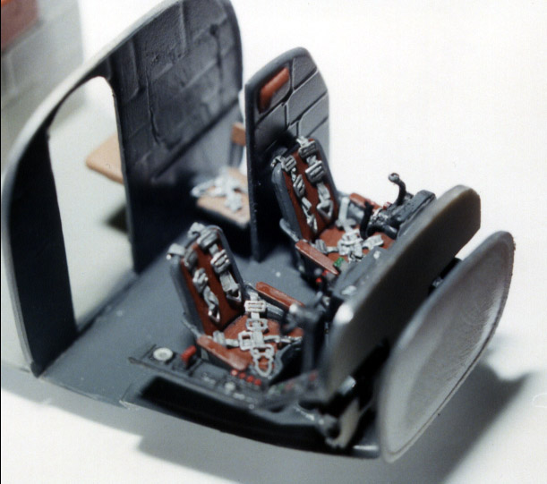
Here we can see how the main interior parts are coming together. The seats are resin cast pieces with seat belts made from the foil from a wine bottle top. The buckles are from the brass set included with the kit.
I probably should mention that the Koster plans do not have any color call-outs for the interior areas other than one basic color code. The only color-coding that is provided with the kit is for the exterior camouflage pattern. I am referring to "Luftwaffe Interior Colors" by Doug Nelson for all interior colors, engine cowling interiors and landing gear colors.
This next shot shows the interior bulkheads in place, the cockpit completed and the radio operator’s position.
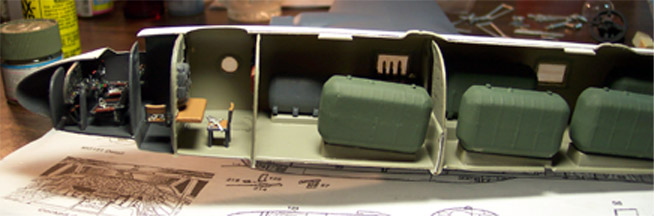
Each of those large fuel tanks was constructed from two vacuformed halves. There was a considerable amount of gap along the seams. It took two and sometimes three coats of Squadron White putty and lots of sanding to get them to smooth out, a lot of work that will not be seen. Take note of the last bulkhead on the right, the one between the fuel tanks. There is a channel through the bottom of that bulkhead that the main wing spars slid through. This is a very tight fit so it is important that the bulkhead pieces not only be assembled correctly but that the wing spars are dry fitted several times during the construction process. Prior to installing the floor pan with the attached pieces I had cut each windowpane out, masked it with masking tape and installed it using Testors Clear Parts Cement.
From this point I shifted my attention to the wings and engine nacelles. The backsides of the engines needed to be sanded down until the material filling the gaps was paper-thin. That material was carefully cut out using my Xacto knife. All four engine faces were placed on a piece of masking tape and then sprayed with Model Masters Enamel Steel. The crank cases were done in Gunze-Sangyo Acrylic RLM 66, the collar at the base of the crankcase is done with Gunze-Sangyo Burnt Iron and the ignition wires were highlighted with Testors flat red. The entire assembly was washed with a sludge wash and set aside to dry overnight. The cowlings suffered from some casting defects. I filled these with superglue, shot it with some accelerator then sanded them down before the glue could get too hard. Here you can see the cowling defect, the engine face in progress and the completed engine face mounted in the cowling. I used a fair amount of gap filling superglue to secure them inside the cowlings.
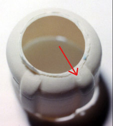 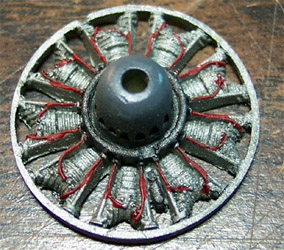 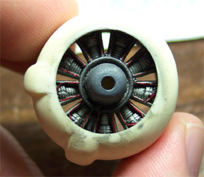
The wings are a very interesting piece of engineering. Bill Koster has included two main wing spars to give plenty of strength to the wings. The primary spar runs nearly the entire length of the wing and includes an extension that runs completely through the body of the aircraft. The main wing spar extensions overlap each other inside the fuselage bulkhead. This not only provides for a very strong wing but takes care of achieving the proper dihedral. The secondary wing spar only extends about five inches into the wing and has a small stud that notch into the fuselage, which ensures that the orientation of the wing from front to back is correct.
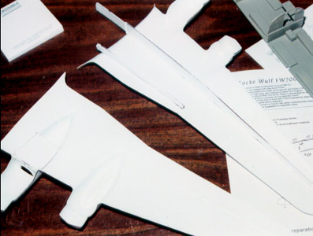 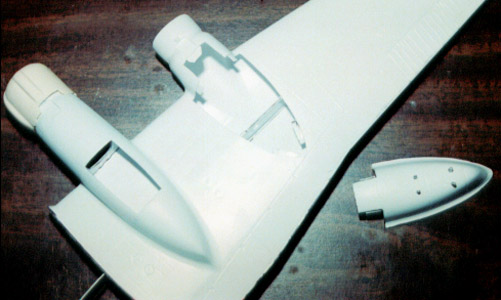
In the second and third pictures you can see the mounting tabs installed on the wing for the new nacelles. In the third picture take note of the overlapping main wing spar.
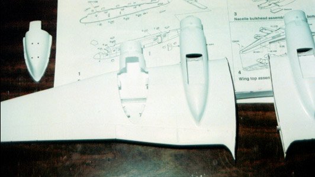
I installed the landing gear bulkheads and painted the interior of the engine nacelles flat black before closing up the wing. I used Tenex 7R to glue the wing halves together working in short sections until the entire structure was secured. The hardest thing to work around at this point was the trailing edge of the wing fillet. It kept wanting to stab me and get bent out of shape. This piece has presented a problem throughout the wing construction. Most areas of the wing lined up quite well with the exception of the front of the engine mounts. Fortunately the cowling will conceal this area.
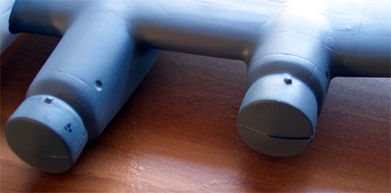

All seams were filled with Squadron White Putty and touched up with a Q-Tip soaked in acetone based fingernail polish remover. This smoothed out the putty quite a bit a reduced the total amount of sanding that was needed. The interiors of the wheel wells were painted with Gunze-Sangyo RLM-02. The next point on the wing is the bottom of the outboard engine nacelles. The kit has molded in the nacelles that would be used for general bomb attachment. Since I was building the C8 version, which used the Henschel guided missile, the nacelles would have to be replaced. The kit provides alternative pieces for this modification. Just cut out the original pieces and install the new ones - NOT! This is a pretty tough conversion. The replacement pieces do not have the same curvature as the originals. Can't forget to install the white metal missile attachment points either, they install from the inside of the nacelle through drilled out mounting holes. The same pieces are used here as would be mounted outside the aircraft for bomb use. I had to install several mounting tabs on the nacelles and the wing and had to apply three or four layers of putty to fill the large gaps. Several days of puttying/sanding/puttying were involved to complete this part of the conversion.
After all the seams had been sanded to the point where they looked good I filled the landing gear bay with tissue paper and shot the wing assembly with automotive gray primer. That was a mistake. I don't know what happened but the paint reacted with the plastic and caused several lesions to form.
I had to fill and sand about six of these areas and repaint with Model Master Gray primer before I could get back to checking the seams for defects. A little more putty, sanding and gray primer and the wings were ready to set aside for later attachment.
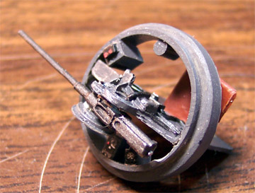
I also spent a little time on the 20mm cannon that mounts in the top front turret. The gun itself is made from white metal and shows adequate detail. There is a fine casting seam that needs to be removed from each side, which was accomplished simply by scrapping my razor knife along it. I used my Welder's Tip Drill to bore out the business end of the cannon and placed a drop of flat black paint into it. The rest of the turret interior is comprised of three resin pieces. The design is such that the gun would be in a fixed position rather than mobile. To remedy this I drilled a small hole through the gun breach area and through both sides of the resin mounting. I cut off a short piece of a safety pin and installed it as a pivot point. At first the gun wanted to fall forward so a very small wedge of styrene was inserted into the pivot point to stiffen up the action. The wedge is virtually invisible and once the glazing is in place it will be impossible to see it. The gun was painted with Gunze-Sangyo Burnt Iron while the main turret pieces were done in Gunze-Sangyo RLM66. The few switches were picked out with Testors White and Red and one instrument face was done with a Reheat decal. The assembly got the standard wash and dry brush in silver. From here I decided to cut out the glazing piece for the turret and mask it off. The plastic is extremely thin on this piece and I mutilated it terribly while opening up the slot for the cannon barrel. A quick email to Bill got a replacement on the way and I moved on to the rear machine gun placement.
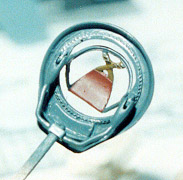
The rear gunner's position is another combination of white metal vacuform and resin pieces. There is an interior vacuform pan that all the smaller pieces mount to that gets glued to the interior of the fuselage. I started by attaching the white metal mounting ring and machine gun mounting together. These pieces took a little judicious bending to get them to fit properly. The resin gunner’s hammock is then installed underneath the mounting ring. There's quite a bit of flash on the gunner's hammock but since I'm doing the C8 with the 20mm cannon in the front there is an extra hammock that would have been used for an alternative machine gun in the front - just in case I screw up. This sub-assembly is now attached to the interior-mounting pan. I stuffed a toothpick through the gun-mounting hole to use as a handle for painting and sprayed the entire assembly Gunze-Sangyo RLM 66. The hammock was painter Testors Rust, the straps were done in Polly Scale Khaki, and details were picked out with silver and the faithful sludge wash went overtop everything.
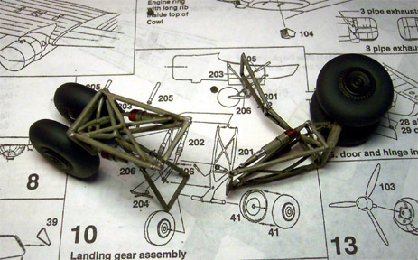
So far all the work on this has been sub-assembly work. The next sub-assembly was the landing gear. These pieces are another kit unto themselves. There are about nine pieces to each side not including gear doors or bay pieces. They are almost all white metal with the exception of the wheels, which are vacuformed. The wheel halves had some marks from the vacuforming process that had to be shaved off and there were a variety of small pieces of flash to be removed from the metal pieces. The biggest advantage to working with all these little metal pieces is that you can bend the suckers to fit and bend I did. Fortunately, once all the connections are made the gear pretty much assumes the correct shape. An overcoat of RLM 02 and a little detailing and they are ready to set aside. The wheels were done with lightened flat black enamel and flat black hubs. I used my Welder's Tip Drill to open up the axel holes.
I'm starting to feel real brave now and keep looking at closing up the fuselage. I think I must have dry fitted the fuselage pieces twenty times already and have a pretty good feel for how it's going to go together. History has taught me that I usually forget something at this point so I dry fit once again. The gun turrets may be a problem in getting them lined up correctly. I install the front turret-using gap filling superglue and dry fit the fuselage again. The front turret looks to be in good shape. I experiment with installing the rear gun position with tweezers while the fuselage is taped together and it looks like this is going to be the way to install it. Set that aside for later. I don't want to have any more pieces than possible sticking out of the fuselage when it gets painted. The replacement turret glazing for the front turret has arrived. I'm going to use the damaged glazing as a paint mask and install the good glazing as one of the last steps. I double-check that the panel lines are lining up and that I did not forget anything. Oops, forgot to install the pilot’s side console. This is why you dry fit until you are sure then do it one more time.
The big moment has arrived. Starting at the nose I work my way down the fuselage with Tenex 7R sealing up about three inches of seam at a time. I move slowly to ensure that the sides are lining up as closely as possible and that the panel lines are still coming together. There seems to be a little warpage in the rudder but that is easily moved into position and stays put after being glued. Almost an hour later I'm back to the starting point - Whew! What a major glue job that was but everything is looking good.
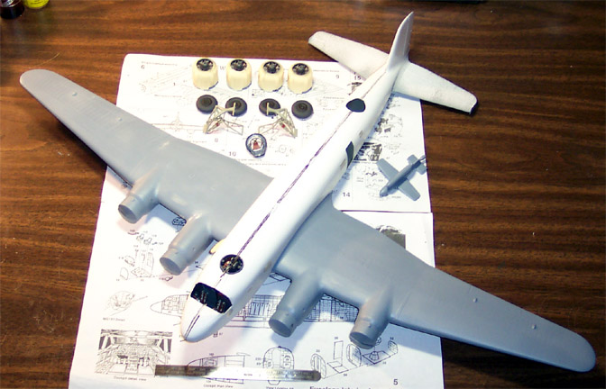
The wings and elevators are not glued on at this point, simply pressed into position. The wing spars are such a tight fit that this helps to hold the fuselage together during the glue process. Now there is one long-ass seam to deal with.
Oh yeah, that's a six-inch metal ruler down in front.
This is a five-step process that moves along at about three inches at a time.
Step 1: Cut thin strips of masking tape and place along both sides of the seam leaving about a three-millimeter gap.

Step 2: Using a trowling tool (I use a potters detail tool for clay) lay on a coating of white putty.

Step 3: Immediately remove the tape pulling it away from the wet putty.

Step 4: Use a good quality cotton swab (I'm using a Q-Tip) dipped in acetone-based fingernail polish remover and wipe down the putty.
Smooth out the seam. This will greatly reduce the amount of sanding required.

Step 5: After the putty has had ample time to dry, sand the seams with a fine sand paper.
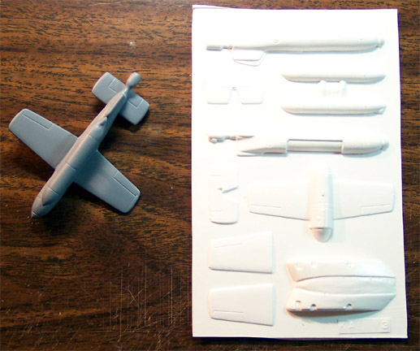
The kit also includes two sheets of parts for the Henschel missiles. Each of these is another small kit. As you probably have noticed by this time there are a lot of sub-kits in this model. The missile consists of nine vacuform pieces: left and right fuselage, upper wing, left and right lower wings, upper and lower elevator and two sides of the fuel tank. The detail seems to be a little soft here, especially around the rocket exhaust nozzle. The wing fit is atrocious. Several coats of white putty were needed to blend the wing into the body and a lot of sanding was involved. I have one missile completed and primed and am dreading doing the second.
In-between putty applications and sandings I decided that this would be a good time to take a look at the propellers. Each propeller has a pretty good amount of flash on it. On each prop at the area where the blades meet the hubs there was at least one point that the mold showed a pit. I started with a general clean up, shaving the excess thin flash off with a fresh Xacto #11 blade. From there I started to file the rough parts down with a diamond file. I didn't want to go too far with the file before I switched over to 400 grit sandpaper to smooth things out. Once the majority of the material was cleaned up I then applied white putty to the casting holes. After this had dried they were sanded again with progressively finer sandpaper. I drilled a small hole in the end of each propeller shaft and superglued a toothpick into it to create a handle for painting. The blades and hubs shall be done with Gunze-Sangyo RLM 70 Black/Green. After applying two coats of paint it was obvious that I had not sanded the blades well enough. Several deep scratches were showing up. I didn't want to sand the blades down any further as they are pretty thin already so I applied a heavy coat of Future floor wax with a brush. This seemed to do the trick quite well. I put another coat of RLM 70 on and they looked good enough to be placed aside. These will be attached at the end along with the top gun turret glazing.
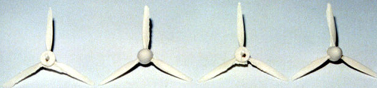
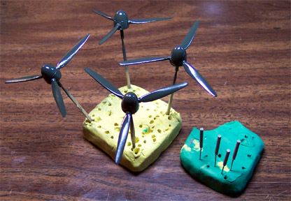
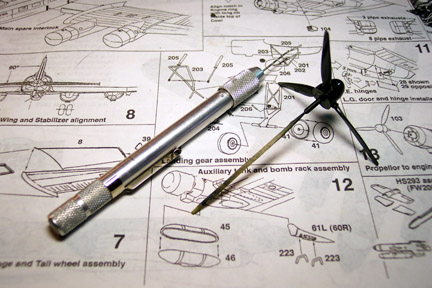
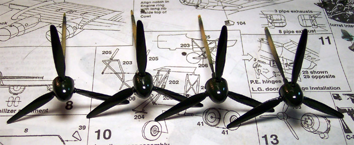
Okay, now it's time to cut some more plastic.
The main vacuform pieces had been easy - they just snapped right out after being scored with the razor, the clear parts are not so easy. Clear Vac parts have always given me a hard time. I hear stories of people whittling them out with a razor knife and ending up using more superglue to fix the fingers than to assemble a complete resin kit. Not me, I have enough holes in my body already and would like to keep all the liquid inside.
This is what power tools are for, Dremel that is, with cutting wheel. Yeah - let's cut some plastic!
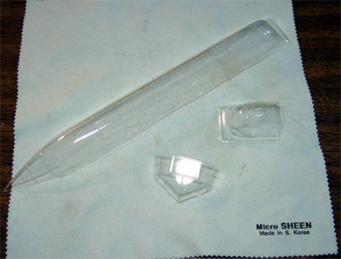
I do not recommend that you try to cut clear parts like this until you have had a little experience slicing up some junk parts. I cut the part out from the main sheet leaving about a quarter inch around the outside edge. Once the part is free I'll use the edge of the cut-off wheel to eat away at the remaining quarter inch until I am right up to the part demarcation. Now I rotate the Dremel and use the flat side of the wheel to trim right to the line. From here I have some fine, feathery pieces that can be quickly and safely trimmed off with a Xacto knife - no blood involved.
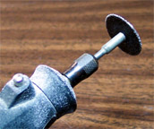
The lower gondola is molded from clear polystyrene and is for the C-2 version. The C-8 version had an enlarged gondola to accommodate a 13mm machine gun and the control station for the Henschel missile. This modification piece is provided on the sheet but now I have to cut off the front of the gondola and attach a new nosepiece. The main canopy is cut out also. I left a little more plastic on this so that it can be trimmed to fit the opening and this turned out to be a wise choice. The right side was just fine while the back and left side needed to be trimmed a little closer to achieve a smooth fit. Regardless, I'm going to have to fill a little in the end anyway; I just want to use as little fill as possible. Take note of that blue cloth that the pieces are lying on, that's a Micro Sheen cloth. It's not your everyday Tack Cloth. This baby has a triangular structure to the material that you can see under the microscope. Not only does it pick up any dust or lint but it also removes any grease or oil, like those big fingerprints that show up after the paint is on. That little cloth cost me $10.00 US and is the best modeling tool that I have ever purchased besides my
Badger
360 airbrush.
Once again I'm facing the fear of the unknown. I've never had to slice up and rebuild clear Vac parts. There seems to be so much opportunity for disaster here. We all know how easy it is to fog clear parts and from the looks of it I will have to cut the main gondola about 2 mm from a couple of clear panes. Not only is there that risk but in working with the front dorsal turret glazing I had destroyed the first one and when cutting out the replacement part I had slipped with the Dremel and created a lot of work for myself buffing out the resulting damage. For about two weeks I let the kit sit in storage while I worked on a Do-17 and considered the options.
Ultimately there is no choice - I must jump in and start slicing plastic. I laid out the two pieces side-by-side and double-checked the area to be cut off, yep, about 2 mm from the clear panes. Out comes the Dremel and the surgery begins. I started my initial cut leaving 2 to 3 mm of extra plastic in place and removed the original nose of the gondola. Once that was complete I used the flat of the cutting wheel to work down to the panel line that is the demarcation for the new nose. So far, so good. No major problems and everything is going much smoother than anticipated. After the plastic was down to the panel line the feathered slag was removed with a razor and the pieces were test fitted. Looks like I was just scaring myself - everything is working out great. The gondola has a slight arc to it to conform to the belly of the fuselage and it is important to maintain that arc. I cut a few short pieces of Evergreen Styrene strips to make mounting tabs and held them in place with compression tweezers while the Tenex 7R was applied. Great care is taken to prevent this glue from getting near the clear panels. After three mounting tabs were in place I moved the main pieces together and let capillary action draw the Tenex along the joint. The seam was filled in the same manner as the fuselage seams were done with the exception of the acetone, as this will fog some clear polystyrene and I didn't want to chance it at this point. The assembly was set aside to dry overnight.
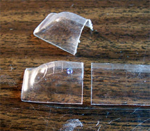 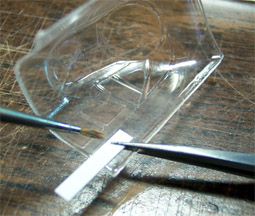 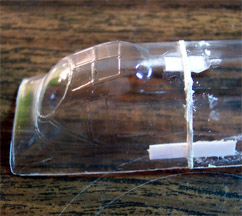
When painting the gondola I plan on shooting a coat of RLM 02 to create the inner framework color then shoot the RLM 65 overtop. Since the styrene alignment tabs are white and will be visible from the outside when completed, I brush painted them with RLM 02 before proceeding. This way they will be less noticeable when everything has been assembled. I used my Xacto knife to trim up the puttied seam before sanding it.
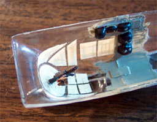
I folded the sandpaper in half to create a firm edge and worked very carefully along the clear panels cleaning up the seam. A little more putty was required to fill a few small dimples where I had gotten too gung-ho with the razor knife. Another light sanding and the seam feels pretty good to the touch. The real test is the primer coat; this is where the defects will show up. It's not ready for that yet, first it needs a treatment of Future along with the other clear pieces. I use a four ounce plastic cup to dip the large parts in, filling it about 1/3 full of Future and dipping each end of the gondola into it. The main canopy and the top turret glazing are also dipped at this time. Each piece is placed on a paper towel and covered for the rest of the day to allow the Future to cure and to prevent any dust from settling on them.
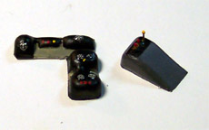 The kit includes two small vacuformed pieces to represent the overhead control panel and a side mounted control panel. After I cut these out and sanded them I painted them flat black with white dial areas. I used Reheat instrument decals over the white and used a couple of PE parts from my spares box to dress up the overhead consol a little. Once these consoles were glued in place it was time to start masking clear parts. The gondola is a major piece of work in itself here. I spent several afternoons cutting little tiny pieces of masking tape and putting them on the windows. I also masked the main canopy at this time. Once the gondola was completely masked I tacked it in place with some superglue and proceeded to work around the edges with Testors Clear Parts cement.  I wanted to use the clear parts cement because I will be painting the seam area with RLM 02 paint before putting any putty on. This way the color is communicated to the interior and any member of the flashlight brigade will not see white putty on the interior. Once the clear cement had dried I airbrushed the entire gondola with RLM 02 then went to work on puttying the seam. The left front corner of the gondola did not want to match up well and took a lot of fill work and I still think it looks a little odd.
I wanted to use the clear parts cement because I will be painting the seam area with RLM 02 paint before putting any putty on. This way the color is communicated to the interior and any member of the flashlight brigade will not see white putty on the interior. Once the clear cement had dried I airbrushed the entire gondola with RLM 02 then went to work on puttying the seam. The left front corner of the gondola did not want to match up well and took a lot of fill work and I still think it looks a little odd.
After the gondola installation had been completed I attached the main canopy. Again I used the clear parts cement and had to use some judicious application of Squadron putty around the edges. The left side had to be trimmed just a little to make it fit snuggly and that task was complete.
While this was drying I turned my attention back to the wings. The front of each engine pod was superglued to the wings and the lower radiator housings were carefully trimmed and dry fitted. They got a dose of superglue to secure them in place. Each engine was carefully masked with tissue paper and I wet the paper slightly after it was in place to eliminate little fuzzies and to help hold the tissue in place.
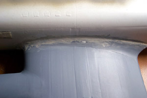
Now it’s time to start pulling some of these sub-assemblies together. After many dry fittings I feel that it is time to attach the wings to the fuselage. The fit of the main spar through the fuselage is very snug so care must be taken to ensure that all pressure applied to the wings when sliding the spar into position is straight-line force. If you allow things to twist the plastic spar will shear off, wonder how I know this? After repairing my broken spar I have gotten the wings into position. I used gap-filling superglue to secure the wings and accelerator to speed things up. I sanded the seam then used Squadron white putty to finish filling in imperfections. I used the same philosophy here as when I was filling the fuselage seam. The photo to the left shows the seam after having been wiped down with acetone but prior to sanding.
While the main wing root seam was drying I moved down to the tail and glued the elevators in place. They got puttied the same as the main wing root. At this point I put the damaged cannon turret glazing in place to act as a painting mask. Since this is a temporary placement I put a very small ball (about the size of a BB) piece of Blue Tac on each side of the turret frame so that when the glazing was pressed into place it would squeeze the Blue Tac into the seam. A little bit protruded on the outside of the glazing and was trimmed with a Xacto blade. It the picture below the red arrows indicates the positioning of the Blue Tac.
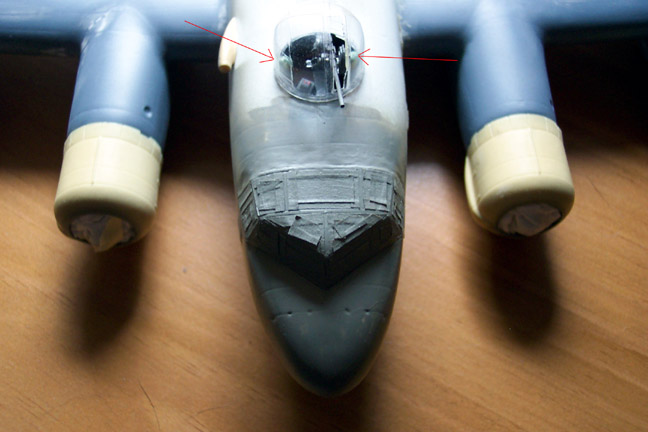
After a few hours had passed I went back and sanded the various puttied seams until they appeared smooth. I say “Appeared” because the primer coat will always turn up some defects – it’s part of the Murphy’s Law of modeling. Tissue paper was stuffed into the cargo door and the rear gun position. The edges of the rear gun position have been left a little rough intentionally. 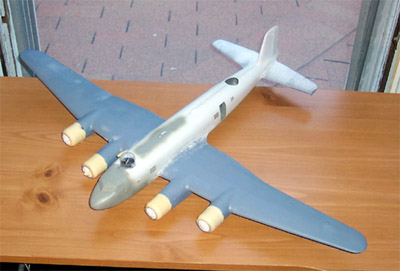 I plan on cleaning this area up when the gun tub is installed. Once again I go over the kit looking for those odd little things that may have been missed; the landing gear bays have been filled with tissue, engine fronts are secure and covered, masking tape on all clear parts seems to be properly in place. We look to be ready to head to the paint room.
I’m using Model Master enamel gray primer in my Badger 360 airbrush. I have thinned it about 25% with lacquer thinner – this will give the paint a little more bite into the plastic than if I used mineral spirits. I have my air pressure set just under 20 PSI, this may seem a little high but I’m shooting for large area coverage and will have the brush about 6 to 8 inches from the model so I want the paint to have enough velocity to get to the model before drying out. When I get down to painting the camouflage pattern the air pressure will be reduced to about 12 PSI and the range will be more like 2 or 3 inches.
 I start on the bottom and work my way around the aircraft. I’m using the center section of the fuselage to hold the ship and will hit this area last. The paint is drying very quickly on the model and after a few minutes I can set it down onto some furniture (3 inverted pop bottle caps) and finish painting the fuselage. Even this early into the painting program I can see a few places that the putty will need to be touched up. I’m not worried about it though, this is to be expected. The model will be allowed to dry overnight and tomorrow I will take care of the minor fixes and repaint those areas. Soon, very soon and the final colors will be going on.
I start on the bottom and work my way around the aircraft. I’m using the center section of the fuselage to hold the ship and will hit this area last. The paint is drying very quickly on the model and after a few minutes I can set it down onto some furniture (3 inverted pop bottle caps) and finish painting the fuselage. Even this early into the painting program I can see a few places that the putty will need to be touched up. I’m not worried about it though, this is to be expected. The model will be allowed to dry overnight and tomorrow I will take care of the minor fixes and repaint those areas. Soon, very soon and the final colors will be going on.